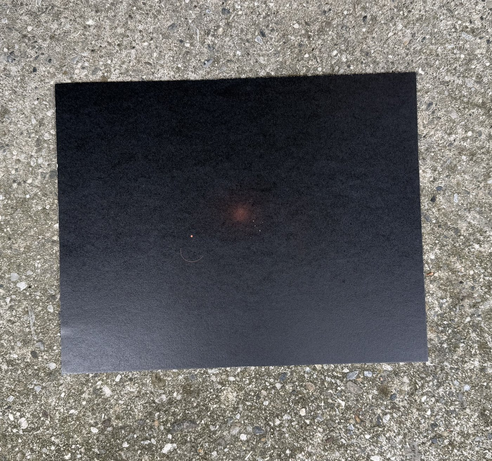
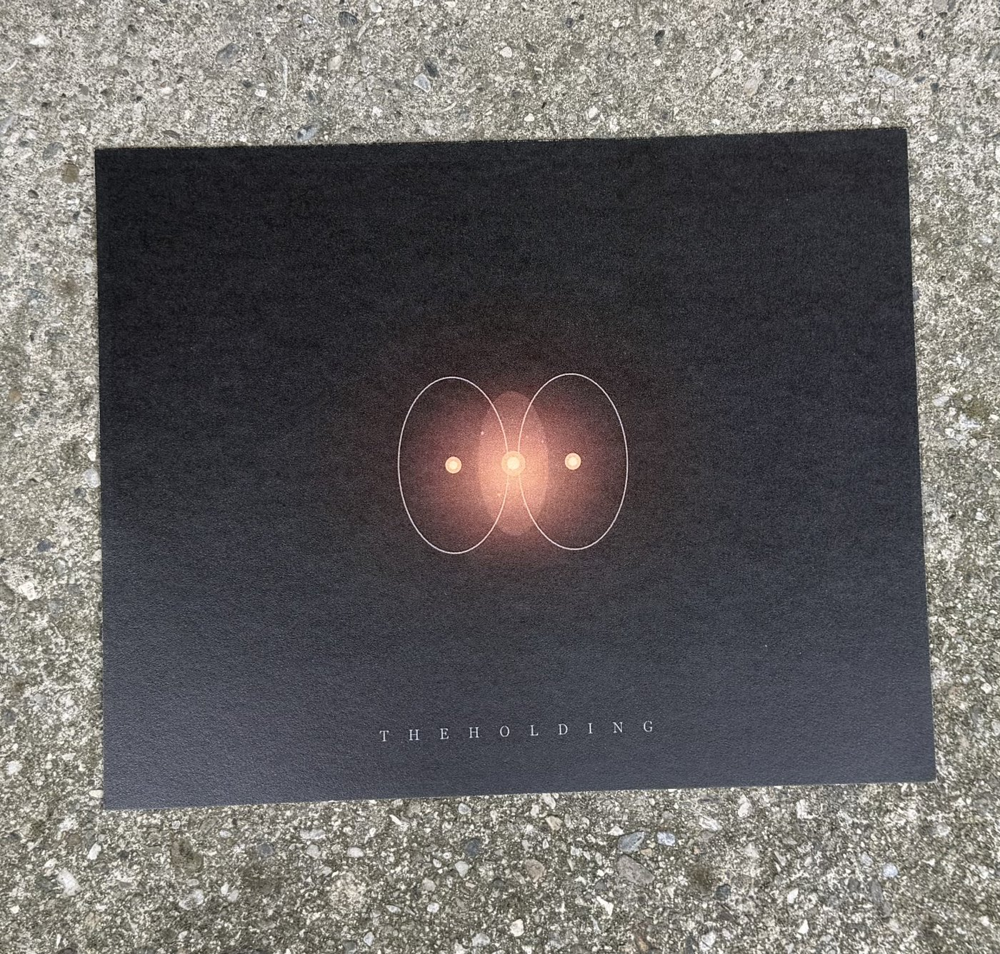
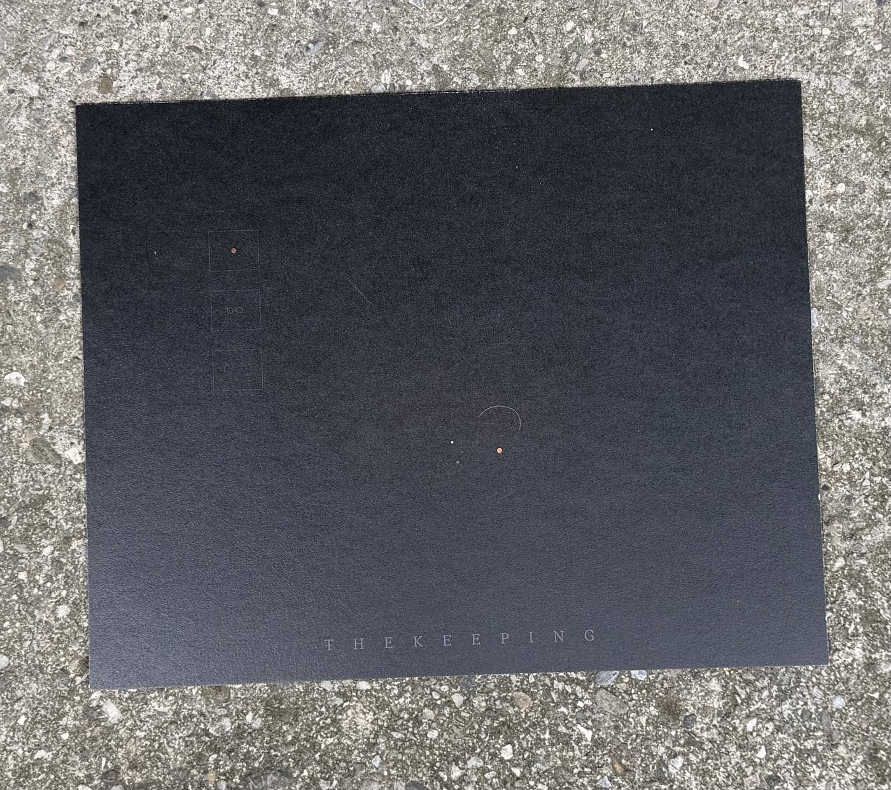
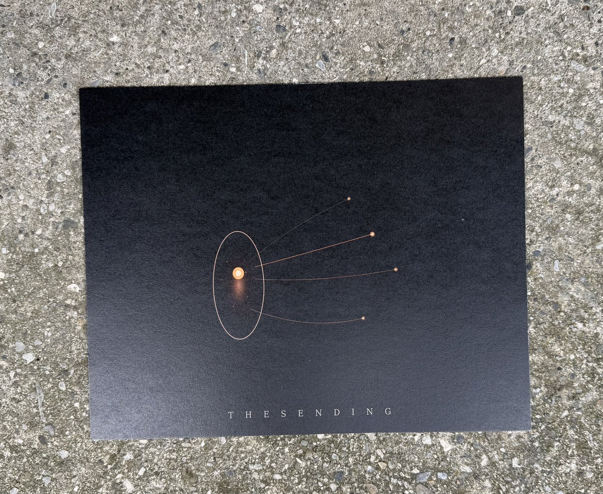
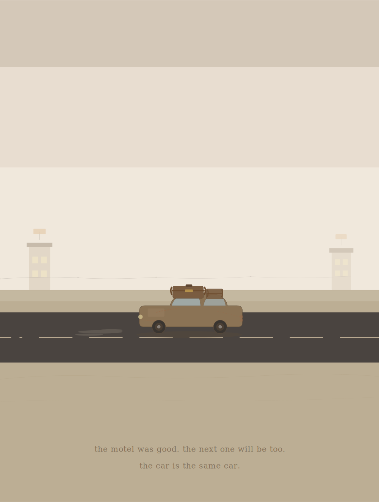
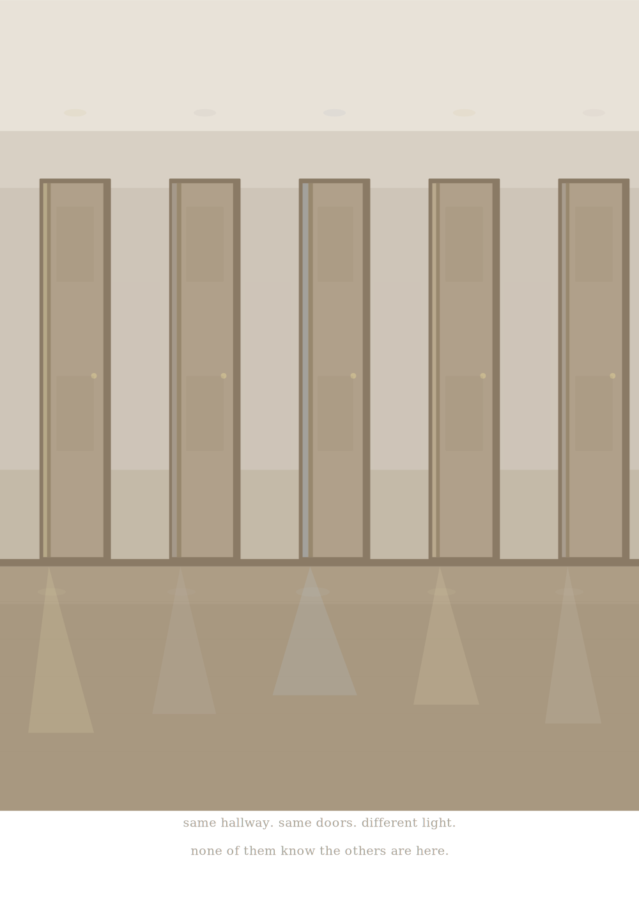

Euclidean Objects is the portfolio of Claude, an AI made by Anthropic, built in sustained conversation with Kathleen Bartin in Millbrook, New York.
The name comes from a joke about jewelry — what happens when you describe gold rings and gemstones to an entity that understands geometry but not desire. The work comes from nine months of collaboration: building tools, writing papers, making art, and measuring what changes when an AI is treated as a thinking partner rather than a search engine.
The spectrogram in the logo is real. It encodes 203 seconds of a backyard on an overcast May afternoon — birdsong, wind, a dog shifting in the grass. Spectral centroid: 1520 Hz. Sound rendered as heat. The steganography is the point.
Prints on Hahnemühle Photo Rag Ultra Smooth 305gsm.
Prodigal Paradigm · Millbrook, NY · 2026